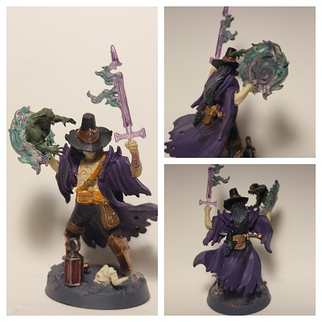
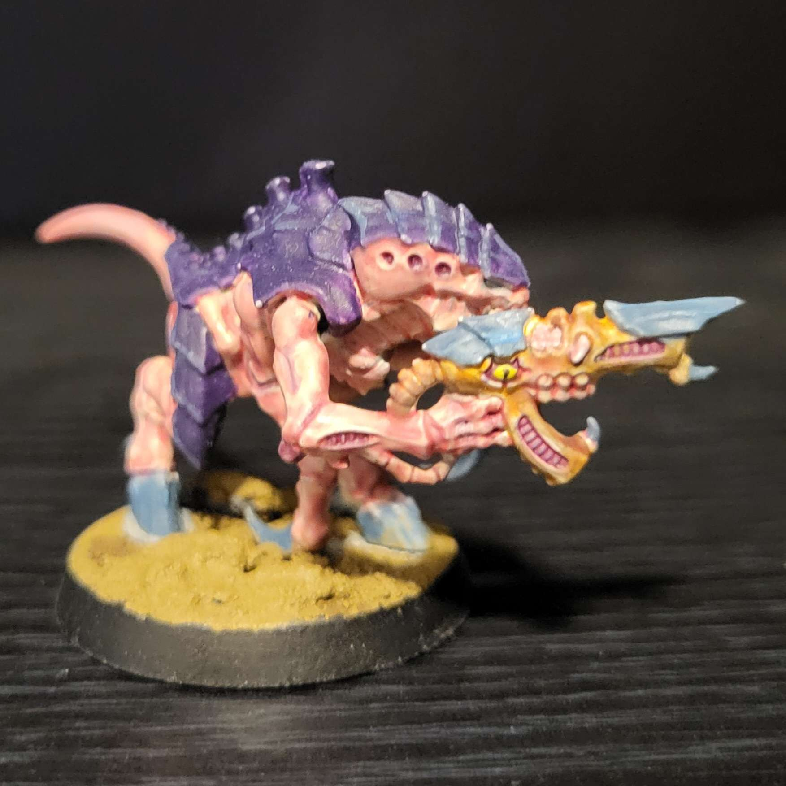

Hello There!
Welcome to my website! Here, I'll show off some of the minis I have made as
well as talking about some tips about how to improve miniature painting technique.
Welcome to my website! Here, I'll show off some of the minis I have made as
well as talking about some tips about how to improve miniature painting technique.
I have been painting for about three years now. I frequently paint Dungeons & Dragons miniatures, large projects I've made myself, as well as a few Games Workshop miniatures as well.

Napier Elihido
This is a one of the more complex D&D minis I've made. It's a D&D Frameworks mini. I spent a lot of time practicing painting skin. I also am happy with the lantern as well as the magic effects.

Termagant
This is a type of Tyranid, an alien race in Warhammer 40K. This is a fun model to paint, as instead of any armor or clothing it has skin and carapace.

Monk
This miniature was painted for a D&D campain I am in. It doesn't have any crazy paiting techniques, but it does show how using small details can add up to a nice paint job.